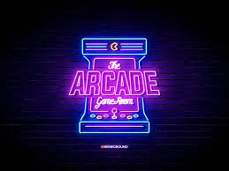

An amusement arcade (often referred to as a video arcade, amusements or simply arcade) is a venue where people play arcade games, including arcade video games, pinball machines, electro-mechanical games, redemption games, merchandisers (such as claw cranes), or coin-operated billiards or air hockey tables. In some countries, some types of arcades are also legally permitted to provide gambling machines such as slot machines or pachinko machines. Games are usually housed in cabinets. The term used for ancestors of these venues in the beginning of the 20th century was penny arcades.Video games were introduced in amusement arcades in the late 1970s and were most popular during the golden age of arcade video games, the early 1980s. Arcades became popular with children and particularly adolescents, which led parents to be concerned that video game playing might cause them to skip school.
This arcade currently offers 3 games. Pong, Tetris, and Snake. A few things you will find on every game page include
- A quick introduction to the game
- Simple instructions on how to play
- A video tutorial of gameplay
- A link to the code to play for yourself